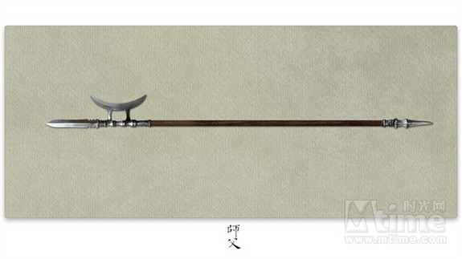
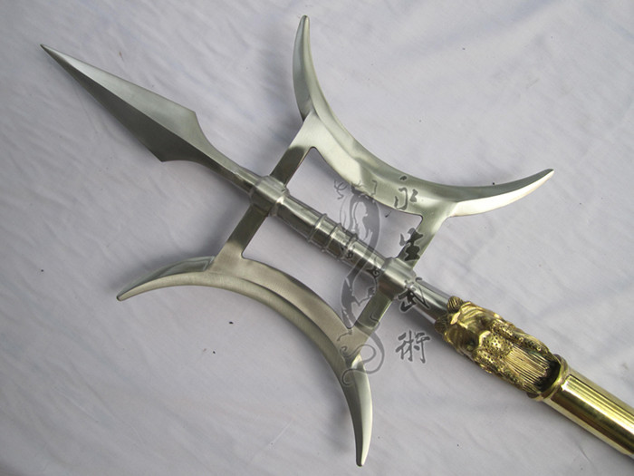

五： 方天戟
方天戟中最有名的要数三国吕布的方天画戟了，历史上的戟是戈与殳演变而成，既有横刃也有纵刃，呈“十”字或“卜”字形。
与我们熟悉的吕布戟不一样，方天戟从青铜时期就已开始出现，在魏晋时期为巅峰。西晋之后便开始衰落，唐代之时基本不用于军中，仅出现在仪仗摆设之中。但作为民间武术器械，戟因其复杂的操作和多用性深受习武爱好者喜爱。民间的戟根据样式不同分为多种，其中最著名的就是方天戟。

说到方天戟的血缘，该兵器跟枪的关系更大，是古代戟的变种。枪尖下两个对称月牙锋刃呈“井”字型，而把只有一个月牙锋刃的单称青龙戟或戟刀（唐宋时期的叫法）。同样主要用于仪仗，战场上对使用者有很高的要求，因此罕见。但如吕布和韩世忠这样的高手自然不在话下。明、清两代方天戟多出现于民间，也有正宗的对练和套路，而真正的戟形状，几乎被人淡忘了。

